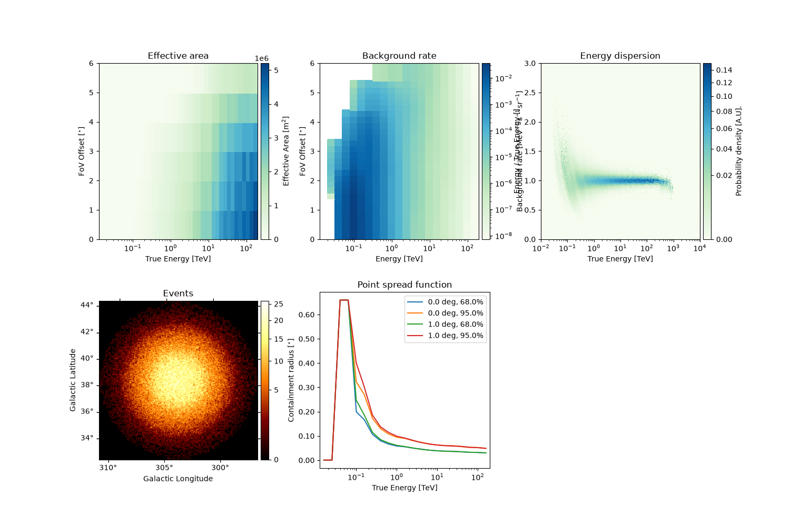
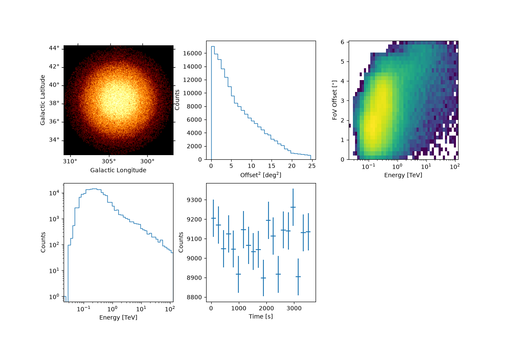
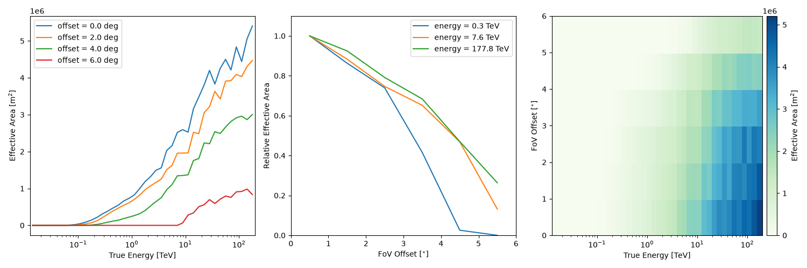
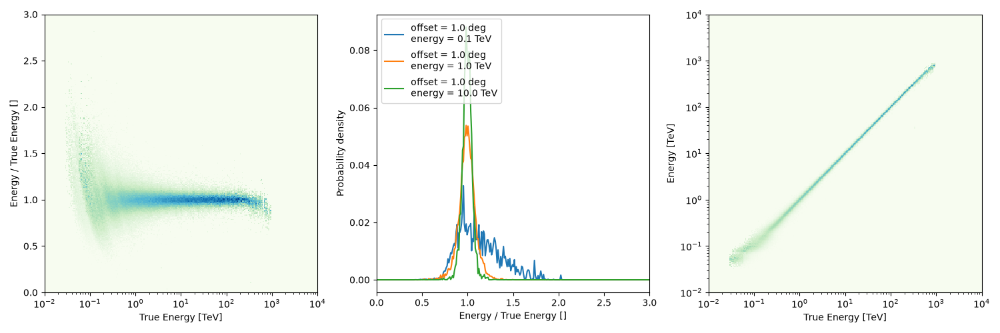
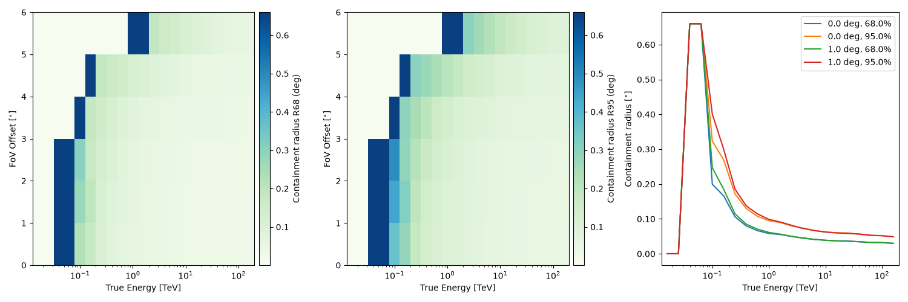
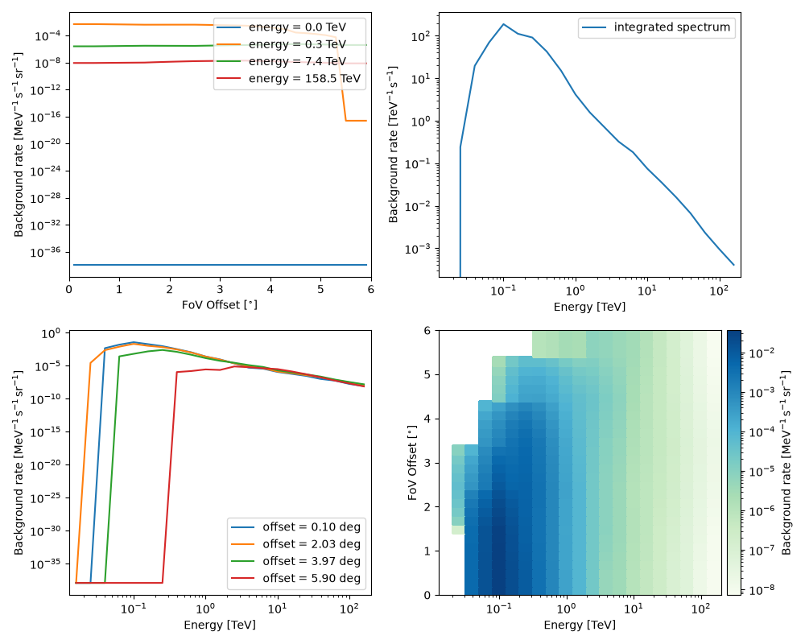
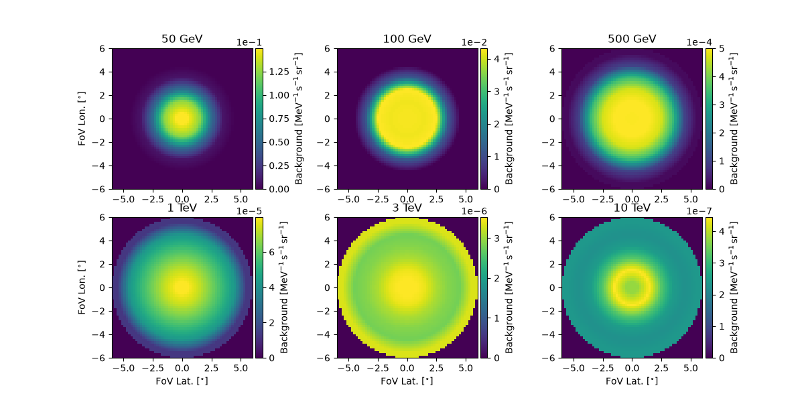
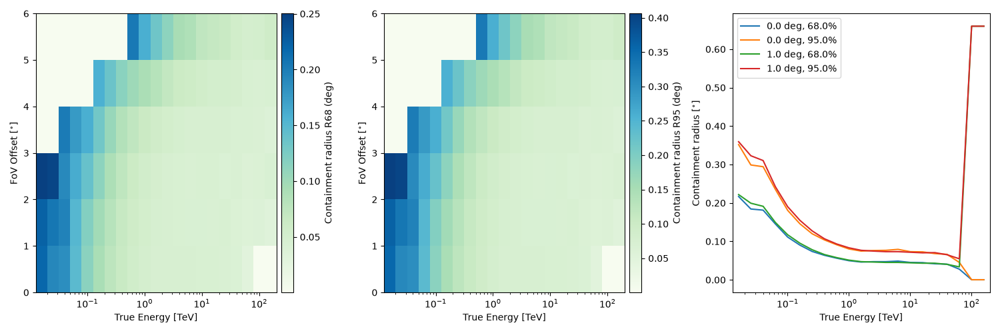
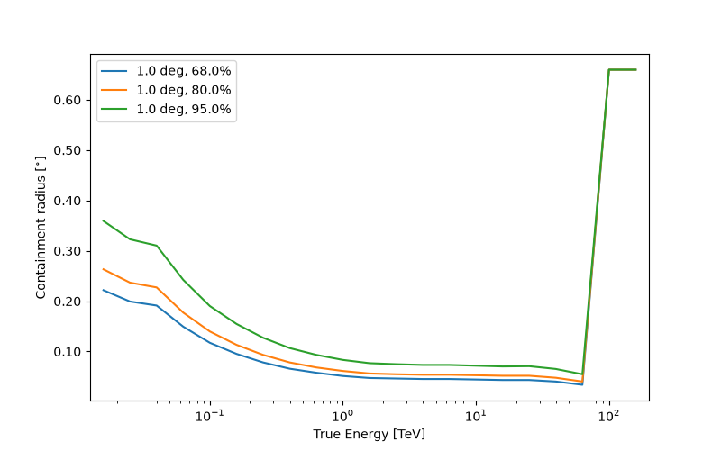

Note
Go to the end to download the full example code or to run this example in your browser via Binder.
CTAO with Gammapy#
Access and inspect CTAO data and instrument response functions (IRFs) using Gammapy.
Introduction#
The Cherenkov Telescope Array Observatory (CTAO) is the next generation ground-based observatory for gamma-ray astronomy. Gammapy is the core library for the Cherenkov Telescope Array Observatory (CTAO) science tools (CTAO Press Release).
CTAO will start taking data in the coming years. To prepare the community, a full simulation of 7 years of observations has been produced for open access as part of the CTAO Science Data Challenge. You can learn how to analyse CTAO data and to use Gammapy using these data.
You can also use Gammapy to simulate CTAO data and evaluate CTAO performance using the CTAO response files. The latest ones, for the Beta array configuration (prod 6, 2026), are available on Zenodo: https://zenodo.org/records/22871179.
Additionally, two sets of responses are available for older array layouts: the Omega (prod3b, 2016), and Alpha (prod5, 2021) array configurations.
They are all fully supported by Gammapy.
Tutorial overview#
This notebook shows how to access CTAO data and instrument response functions (IRFs) using Gammapy, and gives some examples how to quickly look the content of CTAO files, especially to see the shape of CTAO IRFs.
At the end of the notebooks, we give several links to other tutorial notebooks that show how to simulate CTAO data and how to evaluate CTAO observability and sensitivity, or how to analyse CTAO data.
Note that the FITS data and IRF format currently used by CTAO is the one documented at https://gamma-astro-data-formats.readthedocs.io/, and is also used by H.E.S.S. and other Imaging Atmospheric Cherenkov Telescopes (IACTs). So if you see other Gammapy tutorials using e.g. H.E.S.S. example data, know that they also apply to CTAO, all you have to do is to change the loaded data or IRFs to CTAO.
Setup#
import os
from pathlib import Path
from astropy import units as u
# %matplotlib inline
import matplotlib.pyplot as plt
from IPython.display import display
from gammapy.data import DataStore
from gammapy.irf import load_irf_dict_from_file
CTAO open science data challenge (SDC)#
For convenience, since the SDC data files are large, we have taken
a small subset of the data, and included them at $GAMMAPY_DATA/cta-sdc.
Data are distributed for different sites (North or South) and night sky
conditions (Dark or Moon).
In the following, we will show a quick overview of the files and how to load them, and some quick look plots showing the shape of the CTAO IRFs. How to do CTAO simulations and analyses is shown in other tutorials, see links at the end of this notebook.
Datastore#
Gammapy provides the DataStore interface to access the data.
It can be created via the index files when they are provided.
Index files consist in two tables:
the HDU index table which connects every observation element to its location on disk
the observation table which provides a summary of observation metadata
data_store_south = DataStore.from_dir("$GAMMAPY_DATA/cta-sdc/South/Dark")
print(data_store_south)
Data store:
HDU index table:
BASE_DIR: /home/runner/work/gammapy-docs/gammapy-docs/gammapy-datasets/dev/cta-sdc/South/Dark
Rows: 12
OBS_ID: 5000000013 -- 5000000014
HDU_TYPE: [np.str_('aeff'), np.str_('bkg'), np.str_('edisp'), np.str_('events'), np.str_('gti'), np.str_('psf')]
HDU_CLASS: [np.str_('aeff_2d'), np.str_('bkg_3d'), np.str_('edisp_2d'), np.str_('events'), np.str_('gti'), np.str_('psf_3gauss')]
Observation table:
Observatory name: 'N/A'
Number of observations: 2
The tables can be directly explored
display(data_store_south.obs_table)
OBS_ID TSTART TSTOP ... TIMEUNIT TIMESYS TIMEREF
s s ...
---------- ----------- ------------------ ... -------- ------- -------
5000000013 315727020.3 315730620.29999995 ... s utc LOCAL
5000000014 315730620.3 315734220.3 ... s utc LOCAL
In the absence of index files, it is possible to generate the
DataStore directly from the SDC event files.
path = Path(os.environ["GAMMAPY_DATA"]) / "cta-sdc/North/Dark/"
paths = list(path.rglob("dl3-event-obs*.fits.gz"))
data_store_north = DataStore.from_events_files(paths)
print(data_store_north)
display(data_store_north.obs_table)
Data store:
HDU index table:
BASE_DIR: .
Rows: 12
OBS_ID: 5000000001 -- 5000000002
HDU_TYPE: [np.str_('aeff'), np.str_('bkg'), np.str_('edisp'), np.str_('events'), np.str_('gti'), np.str_('psf')]
HDU_CLASS: [np.str_('aeff_2d'), np.str_('bkg_3d'), np.str_('edisp_2d'), np.str_('events'), np.str_('gti'), np.str_('psf_3gauss')]
Observation table:
Observatory name: 'N/A'
Number of observations: 2
OBS_ID TSTART TSTOP ... TIMEUNIT TIMESYS TIMEREF
s s ...
---------- ----------- ----------- ... -------- ------- -------
5000000001 315703860.0 315704760.0 ... s utc LOCAL
5000000002 315704760.0 315705660.0 ... s utc LOCAL
Accessing an observation can then be done directly using its OBS_ID.
Here we consider an observation from the Southern CTAO array.
A Observation bundles the event list and the IRFs as
well as Good Time Intervals (GTI) and metadata.
SDC IRFs are full-enclosure response functions which are split in:
effective area
energy dispersion
point spread function
background
observation = data_store_south.obs(5000000013)
print(observation)
observation.peek()

Observation
obs id : 5000000013
tstart : 61773.25
tstop : 61773.29
duration : 3600.00 s
pointing (icrs) : 193.6 deg, -24.2 deg
deadtime fraction : 0.0%
Events#
Events data are directly accessible via the events attribute of
the Observation.
Events can be accessed from the observation object like:
Here we print the data from the first 5 events listed in the table:
display(events.table[:5])
TIME ENERGY RA ... EVENT_ID DETX DETY
TeV deg ... deg deg
------------------ ---------- --------- ... -------- ----------- ----------
61773.24792015697 0.05941907 192.35968 ... 88802 -1.1016397 0.82475513
61773.24792026059 0.95400846 194.75739 ... 145384 1.1102488 2.0430682
61773.24792032727 0.301907 194.5587 ... 165778 0.91427135 0.39009765
61773.247920455564 0.88798153 192.81873 ... 79241 -0.67988724 0.773133
61773.24792118332 0.13895014 191.99638 ... 23055 -1.4371771 1.0002052
And show a summary plot:
events.peek()
plt.show()

We can access the observation metadata:
# array used
print(observation.meta.obs_info.instrument)
# target name
print(observation.meta.target.name)
CTAO-South
EGAL Survey
Effective area#
aeff = observation.aeff
print(aeff)
aeff.peek()
plt.show()

EffectiveAreaTable2D
--------------------
axes : ['energy_true', 'offset']
shape : (42, 6)
ndim : 2
unit : m2
dtype : >f4
Energy dispersion#

Point spread function#
observation.psf.peek()
plt.show()

Background#
The background is given as a rate in units MeV-1 s-1 sr-1.

Working with CTAO IRFs#
To study expected performances of a given CTAO observation, it can be useful
to build a synthetic Observation. For this, you need to retrieve
the CTAO instrument response functions. They are distributed for the
north and south arrays, for different observing conditions, i.e.
different zenith angles and night sky brightnesses.
The following IRFs are available:
effective area
energy dispersion
point spread function
background
The Beta array configuration (prod 6, 2026) IRFs are available on Zenodo: https://zenodo.org/records/22871179.
We ship a small subset of these IRFs in $GAMMAPY_DATA/cta-caldb.
Gammapy provides an helper function to read in those files and return
a dictionary of IRF objects.
irf_filename = "$GAMMAPY_DATA/cta-caldb/Prod6-CTAO-North-20deg-AverageAz-4LSTs09MSTs-dark-180000s-v1.0.fits.gz"
irfs = load_irf_dict_from_file(irf_filename)
print(irfs)
{'aeff': <gammapy.irf.effective_area.EffectiveAreaTable2D object at 0x788fb0970320>, 'psf': <gammapy.irf.psf.parametric.EnergyDependentMultiGaussPSF object at 0x788fb4146630>, 'edisp': <gammapy.irf.edisp.core.EnergyDispersion2D object at 0x788fb0d61f10>, 'bkg': <gammapy.irf.background.Background3D object at 0x788fb0c5f5f0>}
To visualise the background at particular energies:

Point spread function#

This is how for analysis you could slice out the PSF at a given field of view offset
plt.figure(figsize=(8, 5))
irfs["psf"].plot_containment_radius_vs_energy(
offset=[1] * u.deg, fraction=[0.68, 0.8, 0.95]
)
plt.show()

Further CTAO IRFs#
If you want to use other response files, the following code cells (remove the # to uncomment) explain how to proceed. This example is made with the Beta configuration (Prod6).
# import os
# !curl -o ctao-prod6-zenodo-v1.0-fits-only.zip https://zenodo.org/records/22871179/files/ctao-prod6-zenodo-v1.0-fits-only.zip
# !unzip ctao-prod6-zenodo-v1.0-fits-only.zip
# os.chdir("ctao-prod6-zenodo-v1.0-fits-only")
# !ls fits/
# !tar xf fits/CTAO-Performance-Prod6-CTAO-North-52deg-halfmoon-v1.0.FITS.tar.gz -C fits/.
# !ls fits/*.fits.gz
# irfs1 = load_irf_dict_from_file("fits/Prod6-CTAO-North-52deg-NorthAz-4LSTs09MSTs-halfmoon-180000s-v1.0.fits.gz")
# irfs1["aeff"].plot_energy_dependence()
# irfs2 = load_irf_dict_from_file("fits/Prod6-CTAO-North-52deg-SouthAz-4LSTs09MSTs-halfmoon-180000s-v1.0.fits.gz")
# irfs2["aeff"].plot_energy_dependence()
Next steps#
Learn how to analyse data with High level interface and Low level API or any other Gammapy analysis tutorial.
Learn how to evaluate CTAO observability and sensitivity with 3D map simulation, 1D spectrum simulation or Point source sensitivity.